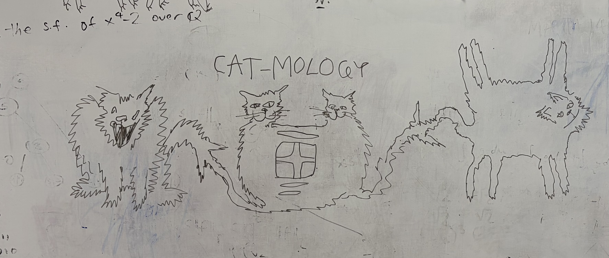

Papers
Research publications
The Hausdorff distance and metrics on toric singularity types (with A. Aitokhuehi et al.), Bull. Sci. Math. 204 (2025), Paper No. 103714, arXiv:2411.11246 , 20 pp.
We study a quasimetric on the space of singularity types of model potentials via convex-geometric means, establishing various estimates comparing it to the Hausdorff distance.
Intrinsic metrics from valuations on convex bodies (with M. Deaton), in preparation
To any valuation on convex bodies, we associate a pseudometric. Under broad conditions, it is a metric, and we study its metric geometry and topology.
Manuscripts, other papers, etc.
Cutting a pancake with an exotic knife (with J. Karlsson and N. Sloane), to appear in the Journal of Integer Sequences, arXiv:2511.15864 , 47 pp., featured in The New York Times , featured in Numberphile videos [1] and [2]
We consider generalizations of the lazy caterer’s problem, together with the pertinent combinatorics and experimental mathematics.
Talks
Hölder estimates for the Hausdorff distance and a quasimetric , AMS–MAA–SIAM Special Session on Research in Mathematics by Undergraduates, Joint Mathematics Meetings, Jan. 2025 [ PDF ]
Manifolds, mixed volumes, and a quasimetric, Tufts Math Monday Meeting, Oct. 2024
Counterexamples in measure, Tufts Math Monday Meeting, Mar. 2024
Metric geometry of convex bodies, Tufts Math Monday Meeting, Oct. 2025
(Near-)metrics arising from valuations on convex bodies, BUGCAT 2025, Nov. 2025
Alternative geometries on the space of convex bodies, Contributed Session on Research by Undergraduates, Joint Mathematics Meetings, Jan. 2026
Valuations and integral geometry, Tufts Math Monday Meeting, Apr. 2026